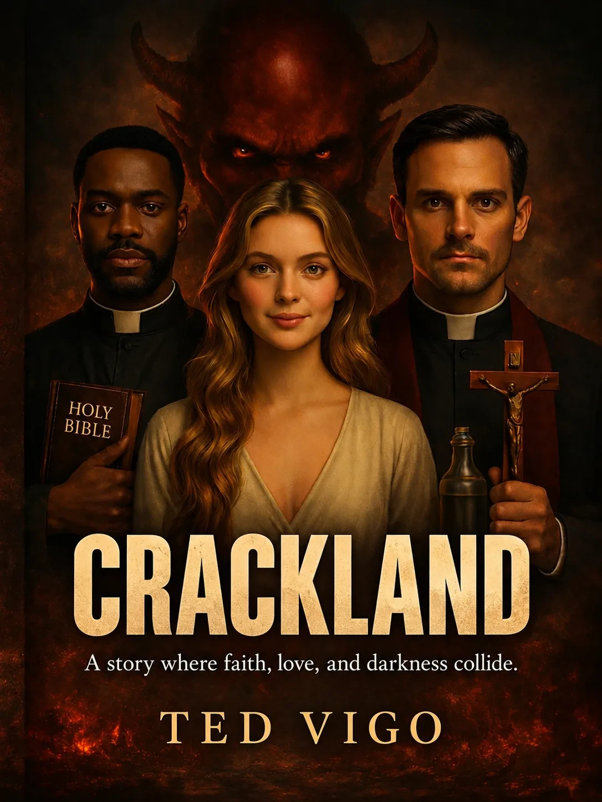
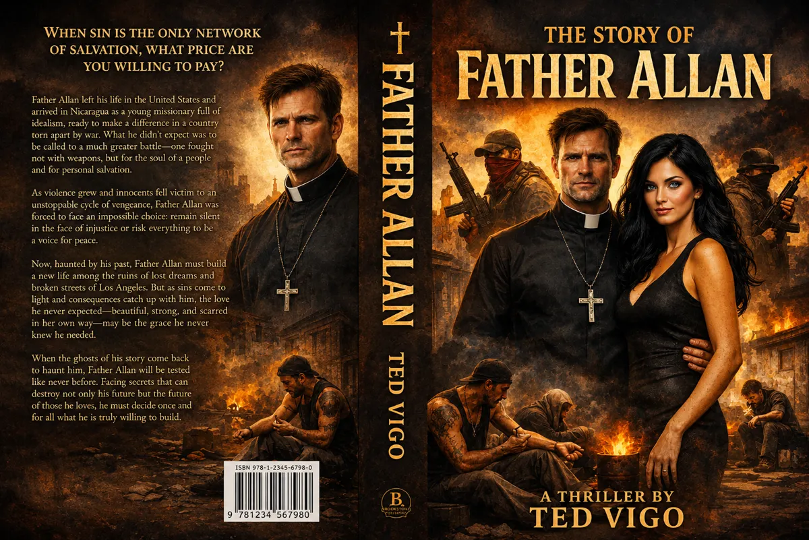
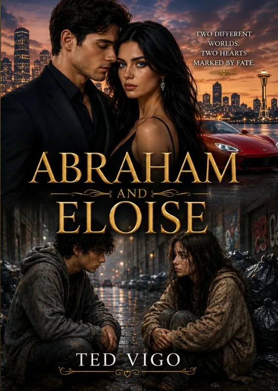
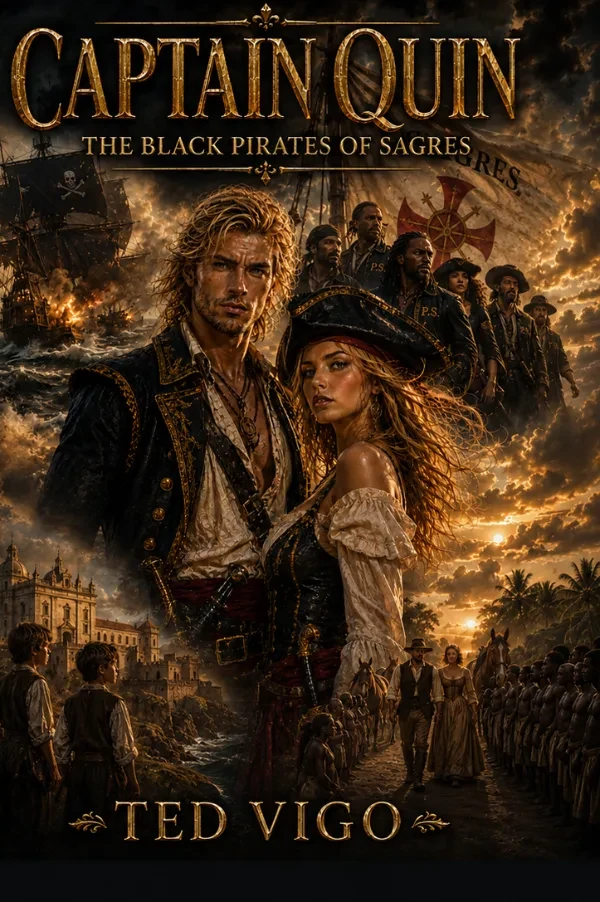
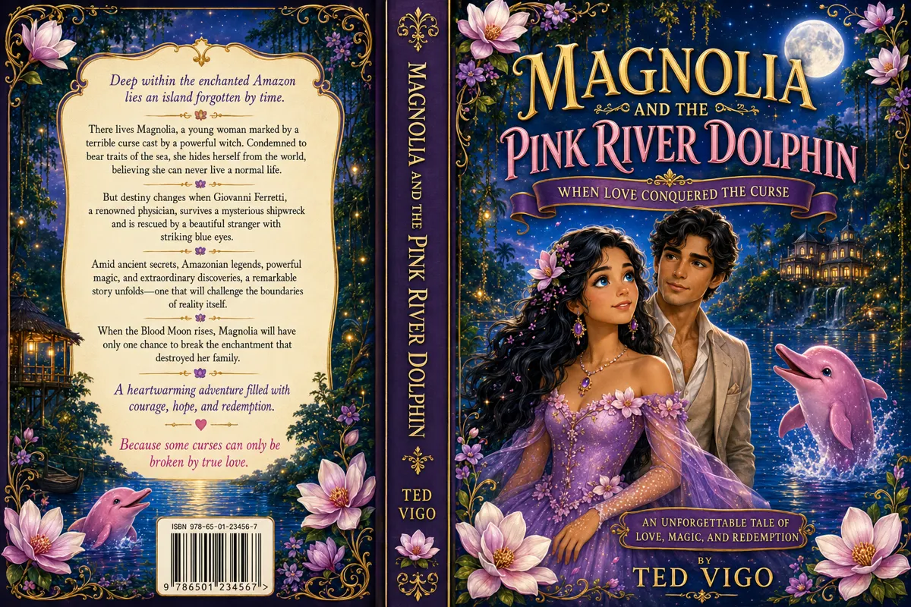
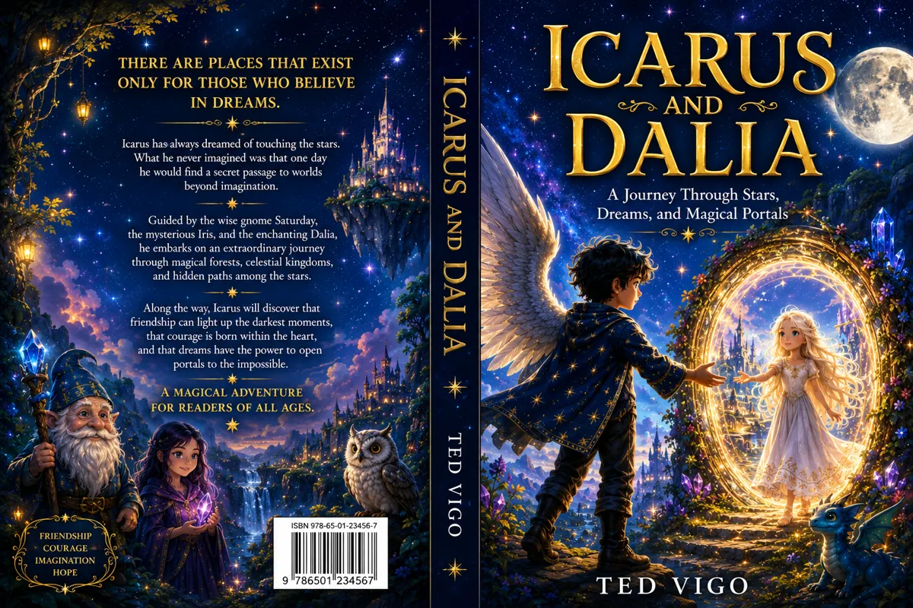
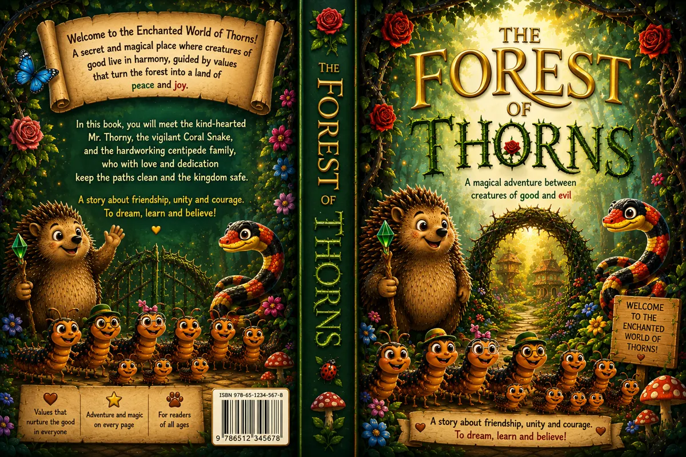
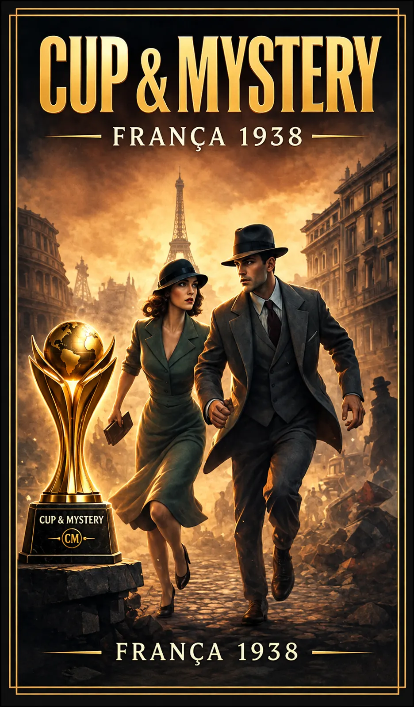
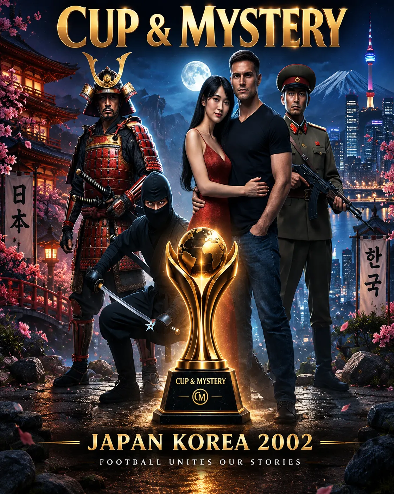
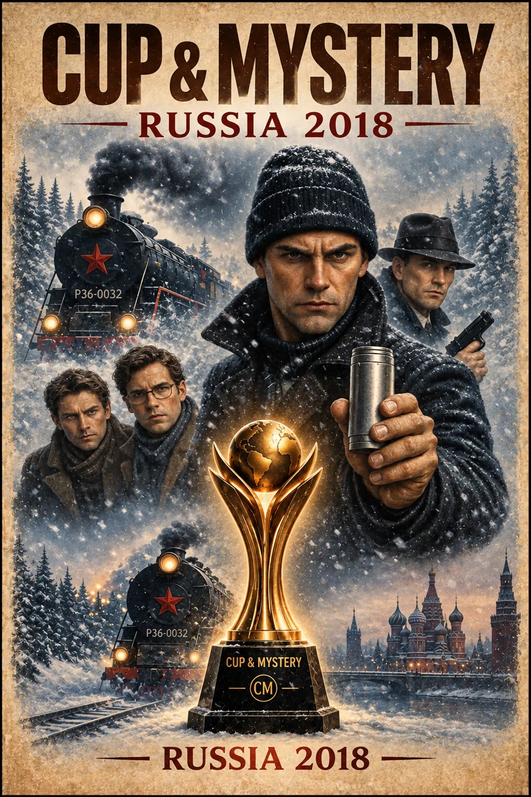

CRACKLAND
Original stories that cross borders, generations and worlds — created for readers and imagined for the screen.
The Library
Drama, mystery, adventure, history, family stories and imaginative worlds for younger readers.
13 Books. Three Worlds. One Storyteller.
Original dramatic and cinematic narratives.




Adventure, wonder, imagination and heart for young readers.



The People's Cup Draws the World. We Tell the Stories Behind It.



The World Behind Cup & Mystery
Every book in the series unfolds in the shadow of a tournament that appears in no history book — because it belongs entirely to this fiction.
In 1930, international football stood at the edge of a new era. Several powerful sporting interests competed for the right to shape the first truly global tournament between national teams. One organization won the public contest. Another refused to disappear.
The defeated side found new allies — wealthy businessmen, private betting syndicates, nightclub owners, bookmakers, shipping interests, and figures connected to organized crime. They understood something the sporting establishment had underestimated: an international football tournament is never just a game. It can become a global market of tickets, travel, entertainment, publicity — and wagers.
Their answer was the PEOPLE'S CUP: a parallel international competition built to draw in everyday fans through cheaper tickets, smaller stadiums, aggressive local promotion, and matches between national sides built from entirely different players. Its first edition was staged in Uruguay in 1930, quietly founding a tradition that would outlive every man who built it.
Presiding over it is the fictional International People's Football Council (IPFC). In public, it is a democratic alternative dedicated to making the game affordable for the ordinary fan — and that mission is genuine. It invites national sides, writes the rules, appoints referees and chooses host venues. But its survival has always depended on private financiers whose interests reach far beyond sport: ticketing, local promotion, touring rights, concessions, and eventually broadcasting all pass through the same hands that provided the original capital.
That is the debt the Cup can never quite repay. In exchange for the money that financed those first ships, hotels, prize purses and posters, the syndicates wanted access, influence and information. It became a permanent shadow trailing the tournament across generations — illegal betting markets, pressure on officials, secret financial arrangements, attempts to fix a result, political favors, and quiet fights for control.
That shadow is not the subject of every story. Some editions barely brush against it; others expose it completely. The syndicate belongs to the hidden history of the People's Cup — a recurring element of the mythology, never a villain required in every book.
Its own name, trophy, emblem, typography, colors, tickets and posters — a complete identity, never a smaller copy of anything else.
Every national side is fictional, built from original players, coaches and officials who exist only within these pages.
The tournament echoes the same eras and host countries that inspire each story, while dates and details stay free to bend wherever the fiction needs them.
Smaller stadiums and lower ticket prices are part of the competition's founding identity, not a footnote to it.
The tournament stays in the background. The people and conflicts at the center of each book never need to become "a story about football" to belong here.
Every book stands on its own, while the People's Cup threads a recognizable history across generations.
Stories to Hear
Ted Vigo's stories are available for audiobook development, narration, production and international distribution.
Fiction & Drama
Drama, romance, suspense, history and spiritual conflict adapted for an immersive listening experience.
Young Listeners
Magical adventures created for expressive narration, memorable characters and family listening.
Global Series
An international anthology designed for cinematic audio storytelling across eras, countries and editions of the People's Cup.
Watch the Stories
A dedicated gallery for book trailers, film teasers, and upcoming productions. New videos can be added as they become available.
Watch the Brazil 2014 trailer.
Watch the France 1938 trailer.
Historical adventure · Film teaser
Watch the Mexico 1986 trailer.
International thriller series · Trailer showcase
New book trailers and screen projects
Watch the Captain Quin trailer above. Additional trailers will be added as they become available.
From Page to Screen
Original stories with international settings, cinematic characters and strong potential for film and serialized television adaptation.
Historical Adventure
A sweeping story of freedom, courage, love and destiny, following the rise of the legendary Black Pirates of Sagres across Portugal, Africa and Brazil.
Rights & RepresentationInternational Anthology Series
A global collection of suspense, romance, crime, politics and supernatural mystery, with each story unfolding around a different edition of the People's Cup.
Series MaterialsAbout the Author
Ted Vigo is an author and creator whose stories move across countries, eras and genres. His work combines drama, mystery, adventure, family, history and cinematic imagination.
His growing body of work includes standalone novels, children's stories and the international Cup & Mystery book series.
Contact
For publishing, film and television inquiries, adaptation rights, literary representation and international production partnerships.
Contact Ted Vigo